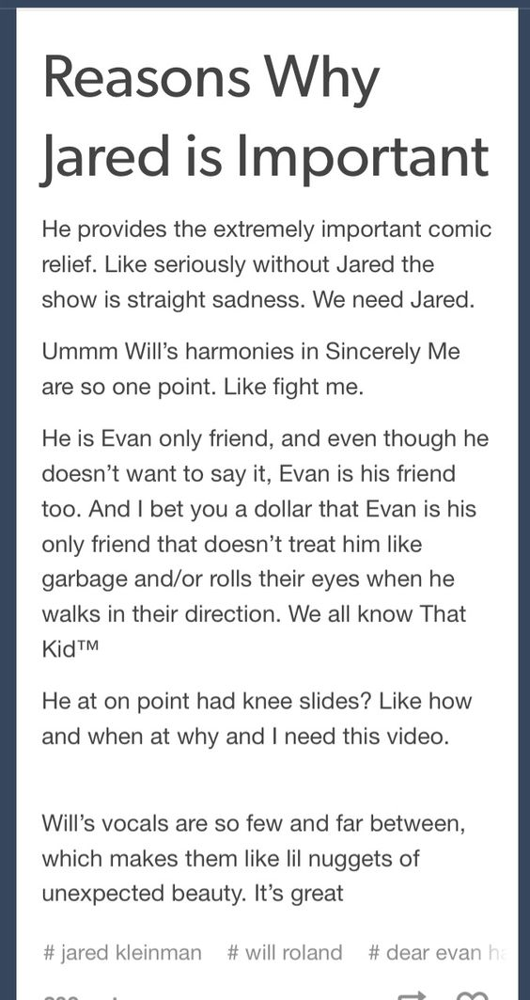

Los análisis
Si hay algo por lo cual los usuarios de Tumblr deben estar muy orgullosos (además de su inclusión y sus memes) es de sus análisis sobre distintos temas.
Por ejemplo: se buscan pistas en todos los episodios de determinada serie para confirmar una teoría generada por el fandom. En el caso del fandom de Voltron, se buscan todos los detalles que pudieran señalar que una determinada pareja se va a volver canon (Si no recuerdan qué es canon pueden ir a la sección de Terminología de la página). al final.
Algunos análisis llegan a ser bastante extensos, y varias personas pueden participar de él en los comentarios. Así, con varios usuarios complementando la teoría, se puede llegar a explicar algo de una serie (por ejemplo). Lo más importante de esto, sin embargo, qué tan detallados pueden llegar a ser con sus explicaciones. Su nivel de análisis es muy abarcativo; desde el simbolismo hasta interpretaciones personales, esta gente sabe lo que hace.
*Sincearly, me y Jared pertenecen ambos al musical Dear Evan Hansen. Si desean escuchar la canción pueden hacer click aquí*
Más allá de las teorías sobre las series, los musicales, los libros, las películas, etc., se generan teorías sobre temas "comunes". Algunos de estos temas incluyen: multiversos, mundos paralelos, paradojas, vampiros en el espacio, entre otras cosas. A veces se generan conversaciones bastante graciosas (rozando lo bizarro), y en otros casos pueden llegar a ser justificadas al punto de ser convincentes.

Hay gente muy profunda en ese sitio.